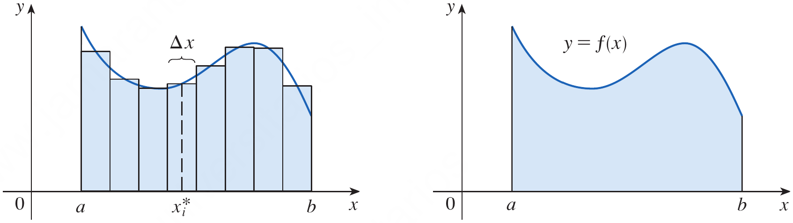
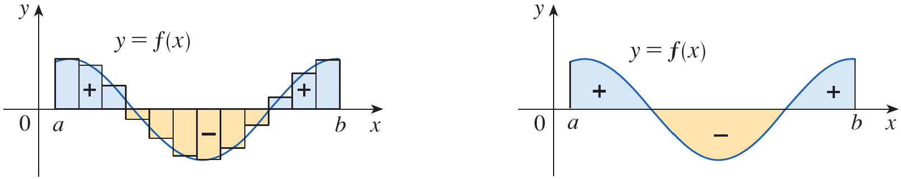
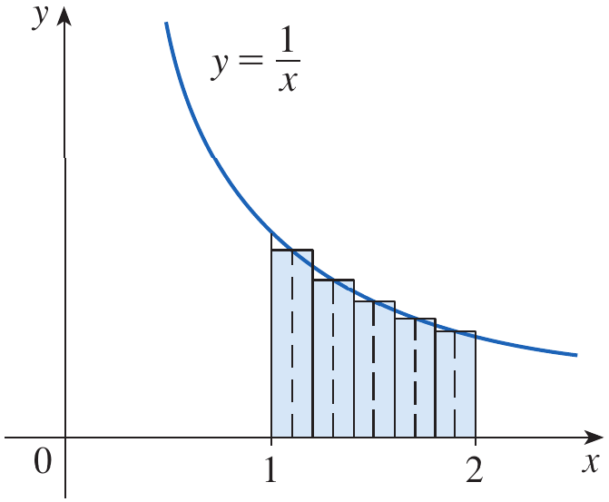

After preparing this topic, you should be able to:
In engineering and computer science, many important quantities are not measured at a single instant or position but accumulate over an interval.
For example, the velocity of a moving mechanical component may vary with time, so its total displacement cannot generally be found by multiplying one velocity value by the elapsed time.
Similarly, a robot may experience a changing force as it moves, a sensor may record a changing signal, and a computer system may process a continuously varying rate of data.
The definite integral provides a mathematical way to combine the contributions of a changing quantity over an interval.
Geometrically, it can be understood through the areas of thin rectangles that approximate the region between a graph and the horizontal axis. As the rectangles become narrower, their total signed area approaches the definite integral.
The definite integral is defined using a limit of Riemann sums. This definition explains the meaning of integration and provides a foundation for evaluating integrals.
In practical computations, a limit of sums may be lengthy. Summation formulas make such calculations manageable, while numerical methods such as the Midpoint Rule estimate integrals when an exact calculation is unavailable or inconvenient.
The properties of definite integrals allow us to split an interval, reverse its direction, combine functions, and compare accumulated quantities without returning to the definition each time.
Consider a mechatronic positioning system whose controller measures the power consumed by a motor as the motor moves a robotic arm. Since power changes during operation, the total energy consumed can be determined by integrating power over time. This type of problem can be solved by studying the definite integral, methods of evaluating it, numerical approximation, and its properties.
Suppose that f is a nonnegative function defined on the interval [a,b]. We want to estimate the area of the region bounded by the graph of f, the x-axis, and the vertical lines x=a and x=b.
We divide the interval [a,b] into n subintervals of equal width.
\Delta x=\frac{b-a}{n}
x_0=a,\quad x_1=a+\Delta x,\quad \ldots,\quad x_n=b
In each subinterval, we choose a sample point x_i^* and construct a rectangle whose height is f(x_i^*) and whose width is \Delta x.
The area of the ith rectangle is f(x_i^*)\Delta x, so the sum of the areas of all rectangles is
\sum_{i=1}^{n}f(x_i^*)\Delta x

Figure 1. A region under a curve approximated by rectangles forming a Riemann sum vs the exact area under the curve using integral.
If f is defined on [a,b], the definite integral of f from a to b is
\int_a^b f(x)\,dx = \lim_{n\to\infty} \sum_{i=1}^{n}f(x_i^*)\Delta x
provided that the limit exists, where \Delta x=(b-a)/n and x_i^* is a sample point in the ith subinterval.
The symbol \int is an elongated letter S, reminding us of a sum. The expression f(x) is called the integrand, a is the lower limit of integration, and b is the upper limit of integration.
The variable x is a variable of integration. It is a dummy variable, so the value of the integral does not change if x is replaced consistently by another variable.
\int_a^b f(x)\,dx=\int_a^b f(t)\,dt
If f(x)\geq 0 on [a,b], then \int_a^b f(x)\,dx represents the area under the graph and above the x-axis.
If the graph lies below the x-axis, the definite integral is negative. Therefore, a definite integral represents signed area, not always ordinary geometric area.
If a graph lies above the axis over one part of an interval and below it over another part, the integral is the area above the axis minus the area below the axis.

Figure 2. A graph crossing the x-axis, showing positive and negative contributions to a definite integral.
\int_a^b f(x)\,dx=A_1-A_2
Evaluate the Riemann sum for f(x)=x^2-6x, 0\leq x\leq3, using n=6 subintervals and the right endpoints.
The interval is [0,3] and the number of subintervals is n=6.
\Delta x=\frac{3-0}{6}=\frac12
Using right endpoints, the sample points are
x_i=\frac{i}{2},\qquad i=1,2,\ldots,6
Thus, the right-endpoint Riemann sum is
R_6=\sum_{i=1}^{6}f\left(\frac{i}{2}\right)\frac12
Substituting the sample points into f(x)=x^2-6x gives
\begin{aligned} R_6 &=\frac12\left[f\left(\frac12\right)+f(1)+f\left(\frac32\right)\right.\\ &\qquad\left.+f(2)+f\left(\frac52\right)+f(3)\right]\\ &=\frac12\left[-\frac{11}{4}-5-\frac{27}{4}-8-\frac{35}{4}-9\right]\\ &=-\frac{161}{8}\\ &=-20.125 \end{aligned}
The Riemann sum is an approximation to the signed area. Because the function is mostly below the x-axis on this interval, a negative value is reasonable.
What does the expression f(x_i^*)\Delta x represent in a Riemann sum?
It represents the signed area of the rectangle with width \Delta x and height f(x_i^*).
If a graph lies entirely below the x-axis on [a,b], what is the sign of \int_a^b f(x)\,dx?
The integral is negative because the function values are negative throughout the interval.
The definition of the definite integral expresses it as a limit of Riemann sums. To evaluate an integral directly from the definition, we write the sum, substitute the function and sample points, simplify the expression, and then evaluate the limit as n approaches infinity.
For equal subintervals on [a,b], the width is \Delta x=(b-a)/n. If right endpoints are used, the sample points are x_i=a+i\Delta x.
The resulting sum is
\int_a^b f(x)\,dx = \lim_{n\to\infty} \sum_{i=1}^{n}f(a+i\Delta x)\Delta x
\sum_{i=1}^{n}1=n
\sum_{i=1}^{n}i=\frac{n(n+1)}{2}
\sum_{i=1}^{n}i^2=\frac{n(n+1)(2n+1)}{6}
\sum_{i=1}^{n}i^3=\left[\frac{n(n+1)}{2}\right]^2
\sum_{i=1}^{n}(a_i+b_i) = \sum_{i=1}^{n}a_i+\sum_{i=1}^{n}b_i
\sum_{i=1}^{n}c\,a_i=c\sum_{i=1}^{n}a_i
Evaluate \int_0^3 (x^2-6x)\,dx by expressing it as a limit of Riemann sums.
Divide [0,3] into n equal subintervals. The width is
\Delta x=\frac{3}{n}
Using right endpoints, the sample points are
x_i=\frac{3i}{n}
By the definition of the definite integral,
\int_0^3(x^2-6x)\,dx = \lim_{n\to\infty} \sum_{i=1}^{n} \left[\left(\frac{3i}{n}\right)^2-6\left(\frac{3i}{n}\right)\right]\frac{3}{n}
Simplifying the terms gives
\begin{aligned} \int_0^3(x^2-6x)\,dx &=\lim_{n\to\infty} \sum_{i=1}^{n}\left(\frac{27i^2}{n^3}-\frac{54i}{n^2}\right)\\ &=\lim_{n\to\infty} \left[\frac{27}{n^3}\sum_{i=1}^{n}i^2 -\frac{54}{n^2}\sum_{i=1}^{n}i\right]\\ &=\lim_{n\to\infty} \left[\frac{27}{n^3}\frac{n(n+1)(2n+1)}{6} -\frac{54}{n^2}\frac{n(n+1)}{2}\right]\\ &=\lim_{n\to\infty} \left[\frac{9(n+1)(2n+1)}{2n^2} -\frac{27(n+1)}{n}\right]\\ &=9-27\\ &=-18 \end{aligned}
Therefore,
\boxed{\int_0^3(x^2-6x)\,dx=-18}
The definition is fundamental, but evaluating a limit of sums can require substantial algebra. Numerical approximations are useful when the function is known only from measurements, when an exact antiderivative is unavailable, or when an approximate answer is sufficient.
The Midpoint Rule, introduced in the next objective, is one such method. Before applying it, it is important to remember that the definite integral measures signed accumulation, so numerical estimates may be negative when the function is mostly below the horizontal axis.
Write the width \Delta x and the right-endpoint sample points for [1,5] divided into n equal subintervals.
The width and right endpoints are
\Delta x=\frac{4}{n} \qquad x_i=1+\frac{4i}{n}
Which summation formula is needed when evaluating a Riemann sum for a quadratic function?
The sum of squares formula is needed.
\sum_{i=1}^{n}i^2=\frac{n(n+1)(2n+1)}{6}
To approximate a definite integral, we can divide [a,b] into n subintervals of equal width and use the midpoint of each subinterval as the sample point.
The width of each subinterval is
\Delta x=\frac{b-a}{n}
\bar{x}_i=\frac{x_{i-1}+x_i}{2}
For a function f on [a,b], the Midpoint Rule with n equal subintervals is
\int_a^b f(x)\,dx \approx M_n=\Delta x\sum_{i=1}^{n}f(\bar{x}_i)
where \Delta x=(b-a)/n and \bar{x}_i is the midpoint of the ith subinterval.

Figure 3. Rectangles used in the Midpoint Rule, with each rectangle’s height determined by the function value at the midpoint of its subinterval.
Use the Midpoint Rule with n=5 to approximate \int_1^2 \frac{1}{x}\,dx.
The interval is [1,2] and n=5, so
\Delta x=\frac{2-1}{5}=0.2
The subintervals have midpoints
1.1,\quad1.3,\quad1.5,\quad1.7,\quad1.9
Since f(x)=1/x, the Midpoint Rule gives
\begin{aligned} M_5 &=0.2\left[f(1.1)+f(1.3)+f(1.5)+f(1.7)+f(1.9)\right]\\ &=0.2\left(\frac{1}{1.1}+\frac{1}{1.3}+\frac{1}{1.5} +\frac{1}{1.7}+\frac{1}{1.9}\right)\\ &\approx0.6919 \end{aligned}
Therefore, the integral is approximately 0.6919 using five midpoint rectangles.
Increasing the number of subintervals makes each rectangle narrower and usually gives a better representation of the curve.
A numerical method is especially valuable when the function comes from sensor data or a computer simulation and an exact integral is difficult to obtain.
The approximation should be reported with a suitable number of decimal places, because additional digits do not necessarily imply additional accuracy.
Use the Midpoint Rule with n=2 to approximate \int_0^2 x^2\,dx.
The width is \Delta x=1 and the midpoints are 0.5 and 1.5.
M_2=1\left[(0.5)^2+(1.5)^2\right]=2.5
For a fixed interval, what happens to the width of each subinterval when n increases?
The width \Delta x=(b-a)/n decreases, so the rectangles become narrower.
\int_a^b f(x)\,dx=-\int_b^a f(x)\,dx
\int_a^a f(x)\,dx=0
\int_a^b c f(x)\,dx=c\int_a^b f(x)\,dx
\int_a^b[f(x)+g(x)]\,dx = \int_a^b f(x)\,dx+\int_a^b g(x)\,dx
\int_a^b[f(x)-g(x)]\,dx = \int_a^b f(x)\,dx-\int_a^b g(x)\,dx
\int_a^b f(x)\,dx = \int_a^c f(x)\,dx+\int_c^b f(x)\,dx
\int_a^b f(x)\,dx\geq0
\int_a^b f(x)\,dx\geq\int_a^b g(x)\,dx
m(b-a)\leq\int_a^b f(x)\,dx\leq M(b-a)
Suppose that \int_1^4 f(x)\,dx=7 and \int_4^6 f(x)\,dx=-2. Find \int_1^6 f(x)\,dx and \int_6^4 f(x)\,dx.
By additivity over adjacent intervals,
\begin{aligned} \int_1^6 f(x)\,dx &=\int_1^4 f(x)\,dx+\int_4^6 f(x)\,dx\\ &=7+(-2)\\ &=5 \end{aligned}
Reversing the limits changes the sign of the integral.
\int_6^4 f(x)\,dx=-\int_4^6 f(x)\,dx=2
Use the properties of definite integrals to evaluate \int_0^1(4+3x^2)\,dx, given that \int_0^1x^2\,dx=\frac13.
Using the sum rule and constant multiple rule,
\begin{aligned} \int_0^1(4+3x^2)\,dx &=\int_0^1 4\,dx+3\int_0^1x^2\,dx\\ &=4(1-0)+3\left(\frac13\right)\\ &=4+1\\ &=5 \end{aligned}
If \int_2^5 f(x)\,dx=8, find \int_5^2 f(x)\,dx.
Reversing the limits changes the sign.
\boxed{\int_5^2 f(x)\,dx=-8}
If \int_0^2 f(x)\,dx=3 and \int_2^5 f(x)\,dx=4, find \int_0^5 f(x)\,dx.
By additivity over adjacent intervals,
\boxed{\int_0^5 f(x)\,dx=3+4=7}
A mechatronic robotic arm uses a motor whose electrical power consumption during a short movement is modeled by
P(t)=20+4t
where P(t) is measured in watts and t is measured in seconds for 0\leq t\leq5. Estimate the total energy consumed during the movement using the Midpoint Rule with n=5 equal subintervals, and then calculate the exact energy using the definite integral.
Energy consumed is the integral of power over time.
E=\int_0^5 P(t)\,dt
First, apply the Midpoint Rule. The subinterval width is
\Delta t=\frac{5-0}{5}=1
The midpoints are 0.5, 1.5, 2.5, 3.5, and 4.5. The corresponding power values are
P(0.5)=22,\quad P(1.5)=26,\quad P(2.5)=30
P(3.5)=34,\quad P(4.5)=38
Therefore, the approximate energy is
\begin{aligned} M_5 &=\Delta t\left[P(0.5)+P(1.5)+P(2.5)+P(3.5)+P(4.5)\right]\\ &=1(22+26+30+34+38)\\ &=150\text{ J} \end{aligned}
Now evaluate the integral exactly.
\begin{aligned} E &=\int_0^5(20+4t)\,dt\\ &=20(5-0)+4\left[\frac{t^2}{2}\right]_0^5\\ &=100+2(25)\\ &=150\text{ J} \end{aligned}
The Midpoint Rule gives the exact answer in this case because the power function is linear and the midpoint rectangles balance the variation over each subinterval.
Solve the odd number exercises from exercise 1 to 84.
Exercises help transform theoretical concepts into practical understanding.
Mathematics is learned by doing and solving exercises will train you to analyze problems, select appropriate methods, and construct logical solutions.
Attempting problems sometimes leads to mistakes which provide opportunities for learning and improvement.
Regular practice increases speed, accuracy, and confidence.
Exercises are given in the Exercises file and you are expected to solve them on your own.